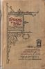

Johann Peter Eckermann
|
|
| Conversations Of Goethe (231,000 words) ( 23 hour read) |
| Conversations Of Goethe as an Epub ebook (660 KB) |
Thomas Love Peacock
|  |
Headlong Hall (28,000 words) ( 3 hour read) 3 hour read)
|
introduction to Headlong Hall by Garnett (9500 words) ( 1 hour read) 1 hour read)
|
| Headlong Hall as an Epub ebook (192 KB) |
{kind=link}
This book was produced for Project Gutenberg - where the plain-text ASCII version is available.
Try the XHTML remover tool used during production.
For more Peacock, go here.
Joris-Karl Huysmans
Against The Grain (60,000 words) ( 6 hour read) 6 hour read)
|
| Against The Grain as an Epub ebook (288 KB) |
{kind=link}
This book was produced for Project Gutenberg - where the plain-text ASCII version is available.
See the production process instructions used.
For more Huysmans, go here.
XSL transforms
| converts to XML, extracting structured content and removing presentation (9k) |
| converts to plain-text, most of the way (9k) |
need updating a bit...
(these are immature versions with limitations. XSL1.0 has limitations.
this is only 80% satisfactory.
check that character entities are handled properly.
the text transform contains notes for usage.)
comment
Epub, from the IDPF, seems a good candidate for the standard ebook format. It is straightforward and powerful — an assembly of other practical standards (essentially XHTML). And a good reader app exists: Adobe Digital Editions.
Here is a guide for Epub format ebook construction, and a (self-referential) Epub version of it.
A collection of the opinions, on widely varied topics, of one of the most eminent figures of literature. During the last ten years of Goethe's life, Eckermann, his secretary and friend, often met and spoke with him. He arranged his notes of these occasions into a journal format. As well as conversation, they present an informal and detailed mixture of scenes, events, and other biographical fragments related to Goethe. Including all volumes: 1, 2, and 3. “The greatest German book there is.” – Nietzsche
This is the first free, complete, globally accessible, digital version of this text available on the web.